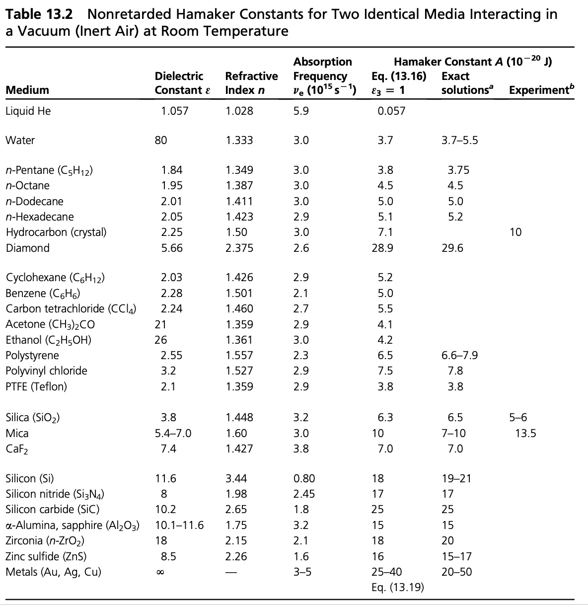
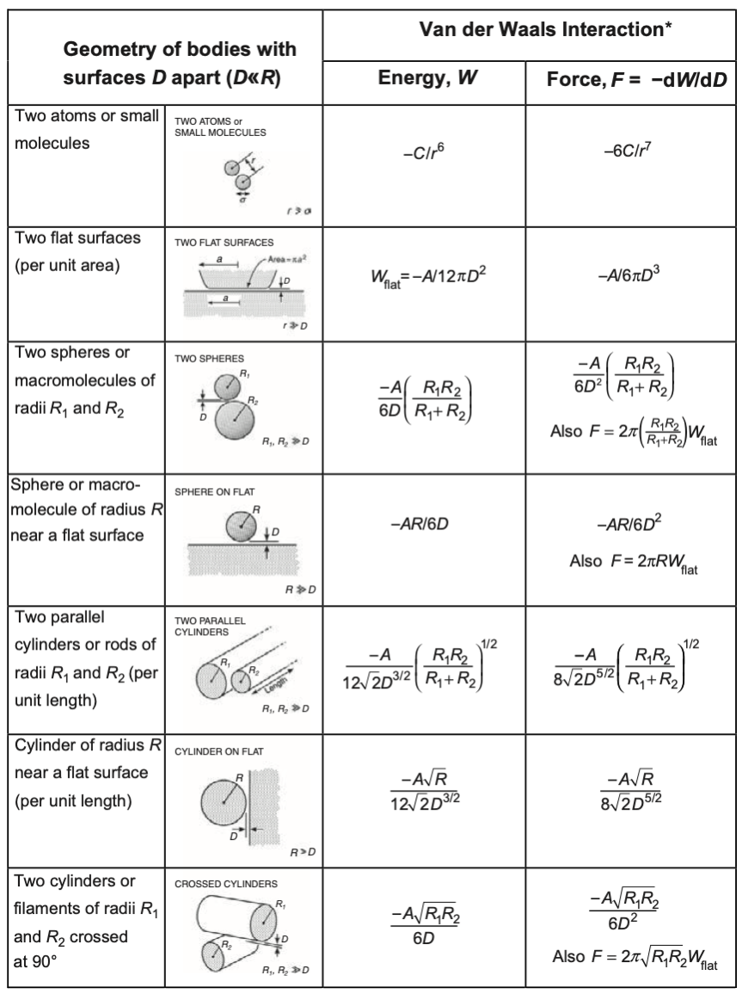
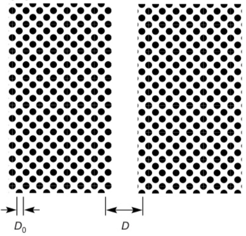

This page was generated from notebooks/L11/1_van_der_Waals_Solid_Bodies.ipynb.

You can download the pdf-version of this page using the link below.
download
van der Waals Interaction#
Interaction Between Macroscopic Bodies#
The equations that we derived before are essentially valid between small objects at distances larger than their size. If objects become macroscopic, we have to consider the interaction of all components of a body with all components of the second body. To calculate those interactions, we will assume that all interactions are additive, while we know that this is not completely true for van der Waals forces.
We will generalize also our law of interaction of the individual units to
where \(C\) is the interaction constant. \(C\) comprises all additional constants in the interaction law. In the McLachlan case the constant \(C\) would be given as
\begin{equation} w_{\mathrm{vdW}}(r)=-\underbrace{\frac{6 k_{\mathrm{B}} T}{\left(4 \pi \epsilon_{0}\right)^{2}} \sum_{n=0}^{\infty}{}^{\prime} \frac{\alpha_{1}\left(i v_{n}\right) \alpha_{2}\left(i v_{n}\right)}{\epsilon_{3}^{2}\left(i v_{n}\right)}}_{C} \frac{1}{r^{6}} \end{equation}
We start by evaluating the interaction of
a) a single molecule with a wall

According to the image above we see that the single molecule interacts with all molecules in a tiny volume element at a distance \(r=\sqrt{x^2+y^2}\) in the same way. This cylindral volume is given by
and contains, based on the number density \(\rho\) of molecules in the wall and amount of \(2\pi x dx dz\rho\) molecules. We then only have to sum up all contributions of shells with different \(x\) and different \(z\) which readily yields
\begin{eqnarray} w(D)&=&-2\pi C\rho\int_z=D^{\infty} dz \int_{x=0}^{\infty}\frac{x dx}{(z^2+x^2)^(n/2)}=-\frac{2\pi C \rho}{n-2}\int_{D}^{\infty}\frac{dz}{z^{n-2}}\\ &=&-\frac{2\pi C \rho}{(n-2)(n-3)D^{n-3}}\; \forall\; n>3 \end{eqnarray}
Thus, if we would use the van der Waals interaction with \(n=6\) we obtain
\begin{equation} w(D)=-\frac{\pi C \rho}{6D^3} \end{equation}
which decays much weaker than the original power law of the van der Waals interaction law. This is a very general results, that the interactions law, which were obtained for point-like objects turn now into distance dependences that are more complex due to the extended shape of macroscopic bodies.
b) Interaction of a sphere with a wall
If we now turn now to a sphere in front of a wall, we have to add up all contributions of molecules in the sphere, which are at a certain distance \(D\). Each of these molecules contributes according to a), so we have to add interactions of slices of the sphere, which are at a distance \(D+z\).

According to the figure, the radius of the slices is given by
which gives a volume of the slice, which is \(\pi x^2 dz=\pi (2R-z)z dz\) that finally gives the number of molecules \(\rho \pi (2R-z)dz\) with \(\rho\) being the number density of wall and sphere. Summing now up over all slices at a distance \(z\) results in
\begin{equation} w(D)=-\frac{2\pi^2 C \rho^2}{(n-2)(n-3)}\int_0^{2R}\frac{(2R-z)zdz}{(D+z)^{n-3}} \end{equation}
This results can be considered in different limits.
For \(D\ll R\) we have mainly contributions from \(z\approx D\), which yield then
\begin{equation} w(D)=-\frac{4\pi^2 C \rho^2 R}{(n-2)(n-3)(n-4)(n-5)D^{n-5}} \end{equation}
which would give for van der Waals interactions
\begin{equation} w(D)=-\frac{\pi^2 C \rho^2 R}{6D} \end{equation}
which reveals a much weaker distance dependence than the original formula for the van der Waals interaction. This is again a general result for the interaction for the interaction of bodies at small distances.
If the seperation of sphere and wall is much larger than the sphere itself \(D\gg R\), we can approximate the above integral with
\begin{equation} w(D)=-\frac{2\pi C \rho (4\pi R^3 \rho/3 )}{(n-2)(n-3)D^{n-3}} \end{equation}
Hamaker Constant#
Independent of the distance law that is resulting from the shape of the solid bodies that are interacting, there are some parameters, which persist in all of the equations and are related to the materials.
This factor is
and is called the Hamaker Constant. It comprises the interaction constant \(C\) and the number density \(\rho\), which is the same for the cases studied above where \(\rho^2\) appears. If the number densities of the interacting bodies are different we have to consider \(\rho_1\) and \(\rho_2\), of course.
Due to the fact that the Hamaker constant is related to the interaction constant \(C\), which contains the according to the McLachlan theory the sum over the polarizabilities of the microscopic units it is strong where the polarizabilities and density are large as for example in diamond or metals. Yet we have to establish a description that is related to the continuum quantities dielectric function or refractive index, which is the Lifshitz theory following in the next lecture.
We can now use the Hamaker constant to simplify the expressions of the interactions of bodies:
To understand the meaning of the Hamaker constant a bit better we can have a look at the following example. We take a body made out of certain units that have a size \(D_0\) and form a lattice. If we split an infinite body of made out of these units into two half spaces, we create two interfaces at a distance \(D\).
The difference in interaction energy per unit are according to the above table is then given by
If take the limit of \(D\rightarrow \infty\), we obtain
The energy per unit surface area is a surface energy and actually the energy to create two surfaces. It therefore corresponds to the interfacial energy of the material \(\gamma\) multiplied by two. So the Hamaker constant is related to the interfacial energies.
While the above equations are derived for two objects of the same material with the same Hamaker constant, there is also a rule for the interaction of two different materials. If we have two bodies of material \(L\) and material \(S\) interacting with each other, then the Hamaker constants can be combined by